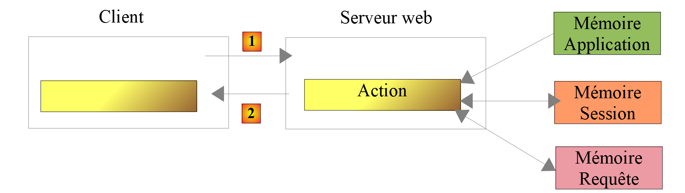

19. Application Exercise – Version 9
In this version, we will improve the server as follows:
- Currently, with each request, tax administration data is retrieved from the database. We will use a session:
- During a user’s first request, tax authority data is retrieved from the database and stored in the session;
- For subsequent requests from the same user, tax authority data is retrieved from the session. We can expect a slight improvement in execution time since database queries are resource-intensive;
- the server will log important events in a text file:
- successful or failed authentication;
- whether the parameters sent by the client are valid;
- the result of the tax calculation;
- various error cases;
- in the event of a fatal error, an email will be sent to the application administrator;
The client must also be modified to handle the session cookie that will be sent to it.
19.1. The server
We are focusing on the server-side of the application.

This architecture will be implemented by the following scripts:

19.1.1. Utilities

19.1.1.1. The [Logger] class
The [Logger] class will be used to write logs to a text file:
<?php
namespace Application;
class Logger {
// attribute
private $resource;
// constructor
public function __construct(string $logsFilename) {
// Open the file
$this->resource = fopen($logsFilename, "a");
if (!$this->resource) {
throw new ExceptionImpots("Failed to create the log file [$logsFilename]");
}
}
// Write a message to the logs
public function write(string $message) {
fputs($this->resource, (new \DateTime())->format("d/m/y H:i:s:v") . " : $message");
}
// Close the log file
public function close() {
fclose($this->resource);
}
}
Comments
- line 7: the log file resource;
- line 10: the class constructor receives the name of the log file as a parameter;
- line 12: the text file is opened in append mode (a+): the file will be opened, and its contents preserved. New data will be written after the current content;
- lines 13–15: if the file could not be opened, an exception is thrown;
- lines 19–21: the [write] method writes the message [$message] to the log file, preceded by the date and time;
- lines 24–16: the [close] method closes the log file;
Note: The server application may serve multiple clients simultaneously. However, there is only one log file for all of them. There is therefore a risk of concurrent access when writing to the file. Writes must therefore be synchronized to prevent them from getting mixed up. PHP provides semaphores [https://www.php.net/manual/fr/book.sem.php] for this purpose. We will ignore write synchronization here, but we must remain aware of the issue.
19.1.1.2. The [SendAdminMail] class
The [SendAdminMail] class allows you to send an email to the application administrator in the event of a crash:
<?php
namespace Application;
class SendAdminMail {
// attributes
private $config;
private $logger;
// constructor
public function __construct(array $config, Logger $logger = NULL) {
$this->config = $config;
$this->logger = $logger;
}
public function send() {
// sends $this->config['message'] to the SMTP server $this->config['smtp-server'] on port $infos[smt-port]
// if $this->config['tls'] is true, TLS will be used
// the email is sent from $this->config['from']
// to the recipient $this->config['to']
// the message has the subject $this->config['subject']
// the attachments from $this->config['attachments'] are attached to the email
// the result of the method
try {
// creating the message
$message = (new \Swift_Message())
// message subject
->setSubject($this->config["subject"])
// sender
->setFrom($this->config["from"])
// recipients using a dictionary (setTo/setCc/setBcc)
->setTo($this->config["to"])
// message text
->setBody($this->config["message"])
;
// attachments
foreach ($this->config["attachments"] as $attachment) {
// attachment path
$fileName = __DIR__ . $attachment;
// check if the file exists
if (file_exists($fileName)) {
// attach the document to the message
$message->attach(\Swift_Attachment::fromPath($fileName));
} else {
if ($this->logger !== NULL) {
// error
$this->logger->write("The attachment [$fileName] does not exist\n");
}
}
}
// TLS protocol?
if ($this->config["tls"] === "TRUE") {
// TLS
$transport = (new \Swift_SmtpTransport($this->config["smtp-server"], $this->config["smtp-port"], 'tls'))
->setUsername($this->config["user"])
->setPassword($this->config["password"]);
} else {
// no TLS
$transport = (new \Swift_SmtpTransport($this->config["smtp-server"], $this->config["smtp-port"]));
}
// the mailer
$mailer = new \Swift_Mailer($transport);
// send the message
$mailer->send($message);
// end
if ($this->logger !== NULL) {
$this->logger->write("Message [{$this->config["message"]}] sent to {$this->config["to"]}\n");
}
} catch (\Throwable $ex) {
// error
if ($this->logger !== NULL) {
$this->logger->write("Error sending message [{$this->config["message"]}] to {$this->config["to"]}\n");
}
}
}
}
Comments
- Line 11: The constructor takes two parameters:
- [$config]: an associative array containing all the information needed to send the email;
- [$logger]: a logger used to log key moments during the email sending process;
The associative array will have the following form:
- Lines 16–76: The [send] method is used to send the email. This code was presented and described in the linked section;
19.1.2. The [dao] layer

The [ServeurDaoWithSession.php] script is as follows:
<?php
// namespace
namespace Application;
// definition of a class ImpotsWithDataInDatabase
class ServerDaoWithSession extends ServerDao {
// constructor
public function __construct(string $databaseFilename = NULL, TaxAdminData $taxAdminData = NULL) {
// simplest case
if ($taxAdminData !== NULL) {
$this->taxAdminData = $taxAdminData;
} else {
// pass control to the parent class
parent::__construct($databaseFilename);
}
}
}
Comments
- line 7: the [ServerDaoWithSession] class in version 09 extends the [ServerDao] class from version 08. Indeed, the [ServerDao] class knows how to use the database. All that remains is to handle the case where the tax administration data has already been retrieved:
- line 10: the constructor now takes two parameters:
- [string $databaseFilename]: name of the file containing the information needed to connect to the database if the tax administration data has not yet been retrieved, NULL otherwise;
- [TaxAdminData $taxAdminData]: the tax administration data if already retrieved, NULL otherwise;
When a web session starts, the [dao] layer will be constructed with a non-NULL [$databaseFilename] object and a NULL [taxAdminData] object. The tax authority data will then be retrieved from the database and stored in the session. For subsequent requests within the same session, the [dao] layer will be constructed with a NULL [databaseFilename] object and a [taxAdminData] object retrieved from the session (which is not NULL). Therefore, no database lookup will occur.
19.1.3. The server script
The server script [impots-server.php] is configured by the following JSON file [config-server.json]:
{
"rootDirectory": "C:/myprograms/laragon-lite/www/php7/scripts-web/impots/version-09",
"databaseFilename": "Data/database.json",
"relativeDependencies": [
"/../version-08/Entities/BaseEntity.php",
"/../version-08/Entities/ExceptionImpots.php",
"/../version-08/Entities/TaxAdminData.php",
"/../version-08/Entities/Database.php",
"/../version-08/Dao/InterfaceServerDao.php",
"/../version-08/Dao/ServerDao.php",
"/Dao/ServerDaoWithSession.php",
"/../version-08/Business/BusinessServerInterface.php",
"/../version-08/Business/ServerBusiness.php",
"/Utilities/Logger.php",
"/Utilities/SendAdminMail.php"
],
"absoluteDependencies": ["C:/myprograms/laragon-lite/www/vendor/autoload.php"],
"users": [
{
"login": "admin",
"passwd": "admin"
}
],
"adminMail": {
"smtp-server": "localhost",
"smtp-port": "25",
"from": "guest@localhost",
"to": "guest@localhost",
"subject": "Tax calculation server crash",
"tls": "FALSE",
"attachments": []
},
"logsFilename": "Data/logs.txt"
}
The server script [impots-server.php] changes as follows:
<?php
// Strict adherence to the declared types of function parameters
declare (strict_types=1);
// namespace
namespace Application;
// Error handling via PHP
ini_set("display_errors", "0");
//
// path to the configuration file
define("CONFIG_FILENAME", "Data/config-server.json");
// retrieve the configuration
$config = \json_decode(file_get_contents(CONFIG_FILENAME), true);
// include dependencies required by the script
$rootDirectory = $config["rootDirectory"];
foreach ($config["relativeDependencies"] as $dependency) {
require "$rootDirectory$dependency";
}
// absolute dependencies (third-party libraries)
foreach ($config["absoluteDependencies"] as $dependency) {
require "$dependency";
}
//
// Symfony dependencies
use \Symfony\Component\HttpFoundation\Response;
use \Symfony\Component\HttpFoundation\Request;
use \Symfony\Component\HttpFoundation\Session\Session;
// session
$session = new Session();
$session->start();
// preparing the server's JSON response
$response = new Response();
$response->headers->set("content-type", "application/json");
$response->setCharset("utf-8");
// Create the log file
try {
$logger = new Logger($config['logsFilename']);
} catch (ExceptionImpots $ex) {
// internal server error
doInternalServerError($ex->getMessage(), $response, NULL, $config['adminMail']);
// done
exit;
}
// 1st log
$logger->write("\n---new request\n");
// retrieve the current request
$request = Request::createFromGlobals();
// Authentication only on the first request
if (!$session->has("user")) {
// log
$logger->write("Authenticating...\n");
// authentication
…
}
// Was the user found?
if (!$found) {
// not found - HTTP 401 UNAUTHORIZED
sendResponse(
$response,
["error" => "Authentication failed [$requestUser, $requestPassword]"],
Response::HTTP_UNAUTHORIZED,
["WWW-Authenticate" => "Basic realm=" . utf8_decode("\"Tax Calculation Server\"")],
$logger
);
// done
exit;
} else {
// note in the session that the user has been authenticated
$session->set("user", TRUE);
// log
$logger->write("Authentication successful [$requestUser, $requestPassword]\n");
}
} else {
// log
$logger->write("Authentication saved in session…\n");
}
// we have a valid user - we check the received parameters
$errors = [];
// we should have three GET parameters
…
// errors?
if ($errors) {
// send a 400 HTTP_BAD_REQUEST error code to the client
sendResponse($response, ["errors" => $errors], Response::HTTP_BAD_REQUEST, [], $logger);
// done
exit;
} else {
// logs
$logger->write("valid parameters ['married'=>$married, 'children'=>$children, 'salary'=>$salary]\n");
}
// we have everything we need to work
// creating the [DAO] layer
if (!$session->has("taxAdminData")) {
// data is retrieved from the database
$logger->write("tax data retrieved from the database\n");
try {
// construction of the [dao] layer
$dao = new ServerDaoWithSession($config["databaseFilename"], NULL);
// store the data in the session
$session->set("taxAdminData", $dao->getTaxAdminData());
} catch (\RuntimeException $ex) {
// log the error
doInternalServerError(utf8_encode($ex->getMessage()), $response, $logger, $config['adminMail']);
// done
exit;
}
} else {
// data is retrieved from the session
$dao = new ServerDaoWithSession(NULL, $session->get("taxAdminData"));
// logs
$logger->write("tax data retrieved from session\n");
}
// creation of the [business] layer
$business = new ServerBusiness($dao);
// Calculate tax
$result = $businessLayer->calculateTax($married, (int) $children, (int) $salary);
// return the response
sendResponse($response, $result, Response::HTTP_OK, [], $logger);
// end
exit;
function doInternalServerError(string $message, Response $response, Logger $logger = NULL, array $info) {
// send an email to the administrator
// SendAdminMail intercepts all exceptions and logs them itself
$infos['message'] = $message;
$sendAdminMail = new SendAdminMail($infos, $logger);
$sendAdminMail->send();
// Send a 500 error code to the client
sendResponse($response, ["error" => $message], Response::HTTP_INTERNAL_SERVER_ERROR, [], $logger);
}
// function to send the HTTP response to the client
function sendResponse(Response $response, array $result, int $statusCode, array $headers, Logger $logger) {
// $response: HTTP response
// $result: array of results
// $statusCode: HTTP status of the response
// $headers: HTTP headers to include in the response
// $logger: the application's logger
//
// HTTP status
$response->setStatusCode($statusCode);
// body
$body = \json_encode(["response" => $result], JSON_UNESCAPED_UNICODE);
$response->setContent($body);
// headers
$response->headers->add($headers);
// send
$response->send();
// log
if ($logger != NULL) {
$logger->write("$body\n");
$logger->close();
}
}
Comments
- lines 34-35: start a session;
- lines 38–40: prepare a JSON response;
- lines 42–50: attempt to create the log file. If an exception occurs, the [doInternalServer] method (lines 132–140) is called;
- line 132: the [doInternalServer] method accepts four parameters:
- [$message]: the message to log. Must be encoded in UTF-8;
- [$response]: the [Response] object that encapsulates the server’s response to its client;
- [$logger]: the [Logger] object used for logging;
- [$infos]: the information used to send an email to the application administrator;
- lines 135–137: an email is sent to the application administrator;
- line 139: the response is sent to the client:
- $response: HTTP response;
- $result: the server sends the JSON string from the array [‘response’=>["error" => $message]];
- $statusCode: [Response::HTTP_INTERNAL_SERVER_ERROR], code 500;
- $headers: [], no HTTP headers to add to the response;
- $logger: the application logger;
- line 58: thanks to the session set up, we will only authenticate the client once:
- once the client is authenticated, we will set a [user] key in the session (line 78);
- during the next request from the same client, line 58 prevents unnecessary authentication;
- line 103: thanks to the session established, we will only search the database once:
- during the first request, the database search will be performed (line 108). The retrieved data is then stored in the session (line 110) associated with the [taxAdminData] key;
- for subsequent requests, the [taxAdminData] key will be found in the session (line 103), and the data on disk will then be directly passed to the [dao] layer (line 119);
- lines 111–116: the search for tax data in the database may fail. In this case, a [500 Internal Server Error] code is sent to the client;
- line 113: the error message from the MySQL driver exception is encoded in ISO 8859-1. It is converted to UTF-8 to be logged correctly;
- the rest of the code is almost identical to that of the previous version;
- lines 143–164: the [sendResponse] function sends all responses to the client;
- lines 144–148: meaning of the parameters;
- line 153: the response is always the JSON string of an array [‘result’=>something];
- line 156: sometimes there are HTTP headers to add to the response. This is the case on line 71;
- line 158: the response is sent;
- lines 160–163: the response is logged and the logger is closed;
19.1.4. [Codeception] Tests

We will only test the [dao] layer, which is the only one that has changed.
The [ServerDaoTest] test code is as follows:
<?php
// Strict adherence to the declared types of function parameters
declare (strict_types=1);
// namespace
namespace Application;
// definition of constants
define("ROOT", "C:/myprograms/laragon-lite/www/php7/scripts-web/impots/version-09");
// path to the configuration file
define("CONFIG_FILENAME", ROOT . "/Data/config-server.json");
// retrieve the configuration
$config = \json_decode(\file_get_contents(CONFIG_FILENAME), true);
// include dependencies required by the script
$rootDirectory = $config["rootDirectory"];
foreach ($config["relativeDependencies"] as $dependency) {
require "$rootDirectory$dependency";
}
// absolute dependencies (third-party libraries)
foreach ($config["absoluteDependencies"] as $dependency) {
require "$dependency";
}
// test -----------------------------------------------------
class ServerDaoTest extends \Codeception\Test\Unit {
// TaxAdminData
private $taxAdminData;
public function __construct() {
// parent
parent::__construct();
// retrieve the configuration
$config = \json_decode(\file_get_contents(CONFIG_FILENAME), true);
// create the [dao] layer
$dao = new ServerDaoWithSession(ROOT . "/" . $config["databaseFilename"]);
$this->taxAdminData = $dao->getTaxAdminData();
}
// tests
public function testTaxAdminData() {
…
}
}
- lines 9–24: we create a runtime environment identical to that of the server script [impots-server];
- line 38: to build the [dao] layer, we instantiate the [ServerDaoWithSession] class;
The test results are as follows:

19.2. The client
We are focusing on the client-side of the application.

This architecture will be implemented by the following scripts:

In the new version, the only changes are:
- the configuration file [config-client.json];
- the client's [dao] layer;
19.2.1. The [dao] layer
The [Dao] layer evolves as follows:
<?php
namespace Application;
// dependencies
use \Symfony\Component\HttpClient\HttpClient;
class ClientDao implements InterfaceClientDao {
// Using a Trait
use TraitDao;
// attributes
private $urlServer;
private $user;
private $sessionCookie;
// constructor
public function __construct(string $urlServer, array $user) {
$this->urlServer = $urlServer;
$this->user = $user;
}
// Calculate tax
public function calculateTax(string $married, int $children, int $salary): array {
// session cookie?
if (!$this->sessionCookie) {
// Create an HTTP client
$httpClient = HttpClient::create([
'auth_basic' => [$this->user["login"], $this->user["passwd"]],
"verify_peer" => false
]);
// Send the request to the server without a session cookie
$response = $httpClient->request('GET', $this->urlServer,
["query" => [
"married" => $married,
"children" => $children,
"salary" => $salary
]
]);
} else {
// send the request to the server with the session cookie
// create an HTTP client
$httpClient = HttpClient::create([
"verify_peer" => false
]);
$response = $httpClient->request('GET', $this->urlServer,
["query" => [
"married" => $married,
"children" => $children,
"salary" => $salary
],
"headers" => ["Cookie" => $this->sessionCookie]
]);
}
// retrieve the response
$json = $response->getContent(false);
$array = \json_decode($json, true);
$response = $array["response"];
// logs
print "$json=json\n";
// retrieve the response status
$statusCode = $response->getStatusCode();
// error?
if ($statusCode !== 200) {
// there is an error - throw an exception
$response = ["HTTP status" => $statusCode] + $response;
$message = \json_encode($response, JSON_UNESCAPED_UNICODE);
throw new ExceptionImpots($message);
}
if (!$this->sessionCookie) {
// retrieve the session cookie
$headers = $response->getHeaders();
if (isset($headers["set-cookie"])) {
// Session cookie?
foreach ($headers["set-cookie"] as $cookie) {
$match = [];
$match = preg_match("/^PHPSESSID=(.+?);/", $cookie, $fields);
if ($match) {
$this->sessionCookie = "PHPSESSID=" . $fields[1];
}
}
}
}
// return the response
return $response;
}
}
Comments
The modification to the [dao] layer now involves managing a session:
- line 14: the session cookie;
- lines 25–39: during the first request, this cookie does not exist; we therefore send the request to the server by sending the authentication information (line 28);
- lines 40–53: for subsequent requests, we normally have the session cookie. We therefore do not send the authentication information (lines 42–44);
- lines 69-82: the server’s response to the first request will include a session cookie. We retrieve it. This code has already been used and explained in the linked section;
- line 78: the retrieved session cookie is stored in the class attribute [$sessionCookie];
Note: We could have kept the old version of the [dao] layer and performed authentication on every request, as the cost is negligible. For educational purposes, we wanted to demonstrate how an HTTP client can manage a session.
19.2.2. The configuration file
The JSON configuration file evolves as follows:
{
"rootDirectory": "C:/Data/st-2019/dev/php7/poly/scripts-console/impots/version-09",
"taxPayersDataFileName": "Data/taxpayersdata.json",
"resultsFileName": "Data/results.json",
"errorsFileName": "Data/errors.json",
"dependencies": [
"/../version-08/Entities/BaseEntity.php",
"/../version-08/Entities/TaxPayerData.php",
"/../version-08/Entities/ExceptionImpots.php",
"/../version-08/Utilities/Utilitaires.php",
"/../version-08/Dao/InterfaceClientDao.php",
"/../version-08/Dao/TraitDao.php",
"/Dao/ClientDao.php",
"/../version-08/Business/BusinessClientInterface.php",
"/../version-08/Business/BusinessClient.php"
],
"absoluteDependencies": [
"C:/myprograms/laragon-lite/www/vendor/autoload.php"
],
"user": {
"login": "admin",
"passwd": "admin"
},
"urlServer": "https://localhost:443/php7/scripts-web/impots/version-09/impots-server.php"
}
Only the URL on line 24 changes.
19.3. Some tests
19.3.1. Test 1
First, we run the client in an error-free environment. The results are the same as in previous versions. But now, on the server side, we have a log file [logs.txt]:
07/04/19 1:16:08:523:
---new request
07/04/19 1:16:08:529 PM: Authentication in progress…
07/04/19 1:16:08:529 PM: Authentication successful [admin, admin]
07/04/19 1:16:08:529 PM: Valid parameters ['married'=>yes, 'children'=>2, 'salary'=>55555]
07/04/19 1:16:08:529: Tax brackets retrieved from database
07/04/19 1:16:08:534: {"response":{"tax":2814,"surcharge":0,"discount":0,"reduction":0,"rate":0.14}}
07/04/19 1:16:08:643 :
---new request
07/04/19 1:16:08:648 PM: Authentication saved in session…
07/04/19 1:16:08 PM:648 : Valid parameters ['married'=>yes, 'children'=>2, 'salary'=>50000]
07/04/19 1:16:08:648 PM: Tax brackets loaded
07/04/19 1:16:08:648: {"response":{"tax":1384,"surcharge":0,"discount":384,"reduction":347,"rate":0.14}}
07/04/19 1:16:08:769 :
---new request
07/04/19 1:16:08:775: Authentication saved in session…
07/04/19 1:16:08:775 PM: Valid parameters ['married'=>yes, 'children'=>3, 'salary'=>50000]
07/04/19 1:16:08:775: Tax brackets loaded
07/04/19 1:16:08:775: {"response":{"tax":0,"surcharge":0,"discount":720,"reduction":0,"rate":0.14}}
07/04/19 1:16:08:888 :
---new request
…
- lines 3-7: during the first request, authentication occurs and data is retrieved from the database;
- lines 9-14: during the next request, there is no further authentication and the data is retrieved from the session. This repeats for subsequent requests (lines 15 and beyond);
19.3.2. Test 2
Now let’s shut down the MySQL database. On the client side, we get the following console output:
The following error occurred: {"HTTP status":500,"error":"SQLSTATE[HY000] [2002] No connection could be established because the target computer explicitly refused it.\r\n"}
Done
On the server side, we have the following logs [logs.txt]:
07/04/19 1:19:52:396 PM:
---new request
07/04/19 1:19:52:405 PM: Authentication in progress…
07/04/19 1:19:52:405 PM: Authentication successful [admin, admin]
07/04/19 1:19:52:405 PM: Valid parameters ['married'=>yes, 'children'=>2, 'salary'=>55555]
07/04/19 1:19:52:405 PM: Tax brackets retrieved from database
07/04/19 1:19:54:461 PM: {"response":{"error":"SQLSTATE[HY000] [2002] Could not establish a connection because the target computer explicitly refused it.\r\n"}}
07/04/19 1:19:55:602: Message [SQLSTATE[HY000] [2002] Could not establish a connection because the target computer explicitly refused it.
] sent to guest@localhost
07/04/19 1:19:55:706:
---new query
…
To retrieve the email received by the application administrator, we use the [imap-03.php] script from the section linked to the following configuration file [config-imap-01.json]:
The following result is obtained:

The file [message_1.txt] contains the following text:
return-path: guest@localhost
received: from localhost (localhost [127.0.0.1]) by DESKTOP-528I5CU with ESMTP ; Thu, 4 Jul 2019 15:20:22 +0200
message-id: <c82d26df5fb352e10a51577cd1b9ed87@localhost>
date: Thu, 04 Jul 2019 13:20:20 +0000
subject: tax calculation server crash
from: guest@localhost
to: guest@localhost
mime-version: 1.0
content-type: text/plain; charset=utf-8
content-transfer-encoding: quoted-printable
SQLSTATE[HY000] [2002] No connection could be established because the target computer explicitly refused it.
19.3.3. Test 3
Now let’s ensure that the [logs.txt] file cannot be created. To do this, simply create a [logs.txt] folder:

Once that is done, let’s run the client.
On the client side, we get the following console output:
The following error occurred: {"HTTP status":500,"error":"Failed to create the log file [Data\/logs.txt]"}
Done
On the server side, there are no logs, but the administrator receives the following email:
return-path: guest@localhost
received: from localhost (localhost [127.0.0.1]) by DESKTOP-528I5CU with ESMTP ; Thu, 4 Jul 2019 15:31:49 +0200
message-id: <b2cee274f3437952231d62152ba1cdb3@localhost>
date: Thu, 04 Jul 2019 13:31:48 +0000
subject: tax calculation server crash
from: guest@localhost
to: guest@localhost
mime-version: 1.0
content-type: text/plain; charset=utf-8
content-transfer-encoding: quoted-printable
Failed to create the log file [Data/logs.txt]
19.3.4. Test 4
This time, let’s provide incorrect credentials to the connecting client in the client configuration file.
The client displays the following console output:
The following error occurred: {"HTTP status":401,"error":"Authentication failed [x, x]"}
Done
On the server side, the following logs appear:
---new request
07/04/19 1:36:05 PM:789: Authentication in progress…
07/04/19 1:36:05 PM:789: {"response":{"error":"Authentication failed [x, x]"}}
19.3.5. Test 5
Let’s put the correct username and password [admin, admin] back into the client configuration file.
Now let’s request the server’s URL [http://localhost/php7/scripts-web/impots/version-08/impots-server.php] directly in a browser without passing any parameters:
In the server's log file [logs.txt], we see the following lines:
---new request
07/04/19 13:37:33:711: Authentication in progress…
07/04/19 1:37:33 PM:711: Authentication successful [admin, admin]
07/04/19 1:37:33 PM:711: {"response":{"errors":["GET method required with only the parameters [married, children, salary]","married parameter missing","children parameter missing","salary parameter missing"]}}
19.4. Tests [Codeception]
As we did for previous versions, we will write [Codeception] tests for version 09.

19.4.0.1. [Business] Layer Test
The [ClientMetierTest.php] test is as follows:
<?php
// Strict adherence to the declared types of function parameters
declare (strict_types=1);
// namespace
namespace Application;
// definition of constants
define("ROOT", "C:/Data/st-2019/dev/php7/poly/scripts-console/impots/version-09");
// path to the configuration file
define("CONFIG_FILENAME", ROOT . "/Data/config-client.json");
// retrieve the configuration
$config = \json_decode(file_get_contents(CONFIG_FILENAME), true);
// include dependencies required by the script
$rootDirectory = $config["rootDirectory"];
foreach ($config["dependencies"] as $dependency) {
require "$rootDirectory/$dependency";
}
// absolute dependencies (third-party libraries)
foreach ($config["absoluteDependencies"] as $dependency) {
require "$dependency";
}
//
// uses
use Codeception\Test\Unit;
use const CONFIG_FILENAME;
use const ROOT;
// test class
class BusinessClientTest extends Unit {
…
}
Comments
- Compared to the test class in version 08, the only change is line 10, which specifies the root directory of the client to be tested;
The test results are as follows:

It is worth checking the server logs [logs.txt]:
07/04/19 1:48:48:525 PM:
---new request
07/04/19 1:48:48:536 PM: Authentication in progress…
07/04/19 1:48:48:536 PM: Authentication successful [admin, admin]
07/04/19 1:48:48:536 PM: Valid parameters ['married'=>yes, 'children'=>2, 'salary'=>55555]
07/04/19 1:48:48:536 PM: Tax data retrieved from database
07/04/19 1:48:48:548 PM: {"response":{"tax":2814,"surcharge":0,"discount":0,"reduction":0,"rate":0.14}}
07/04/19 1:48:48:635:
---new request
07/04/19 1:48:48 PM:645: Authentication in progress…
07/04/19 1:48:48 PM:645 : Authentication successful [admin, admin]
07/04/19 1:48:48:645 PM: parameters ['married'=>yes, 'children'=>2, 'salary'=>50000] valid
07/04/19 1:48:48:645: Tax data retrieved from database
07/04/19 1:48:48 PM:655: {"response":{"tax":1384,"surcharge":0,"discount":384,"reduction":347,"rate":0.14}}
07/04/19 1:48:48 PM:751 :
---new request
07/04/19 1:48:48 PM:762: Authentication in progress…
07/04/19 1:48:48 PM:762 : Authentication successful [admin, admin]
07/04/19 1:48:48:762: parameters ['married'=>yes, 'children'=>3, 'salary'=>50000] valid
07/04/19 1:48:48:762: Tax data retrieved from database
07/04/19 1:48:48 PM:773: {"response":{"tax":0,"surcharge":0,"discount":720,"reduction":0,"rate":0.14}}
07/04/19 1:48:48:865 :
---new query
…
---new request
07/04/19 1:48:49:546 PM: Authentication in progress…
07/04/19 1:48:49:546 PM: Authentication successful [admin, admin]
07/04/19 1:48:49:546 PM: Valid parameters ['married'=>yes, 'children'=>3, 'salary'=>200000]
07/04/19 1:48:49:546: Tax data retrieved from database
07/04/19 1:48:49:551: {"response":{"tax":42842,"surcharge":17283,"discount":0,"reduction":0,"rate":0.41}}
We can see that the tax authority data is always retrieved from the database and never from the session. Let’s go back to the code of the executed test:
<?php
// Strict adherence to the declared types of function parameters
declare (strict_types=1);
// namespace
namespace Application;
…
// test class
class BusinessClientTest extends Unit {
// business layer
private $business;
public function __construct() {
parent::__construct();
// retrieve the configuration
$config = \json_decode(\file_get_contents(CONFIG_FILENAME), true);
// Create the [dao] layer
$clientDao = new ClientDao($config["urlServer"], $config["user"]);
// Create the [business] layer
$this->business = new ClientBusiness($clientDao);
}
// tests
public function test1() {
…
}
public function test2() {
…
}
public function test3() {
…
}
…
}
In a [Codeception] test class, the constructor is executed for each test.
- Line 21: A new [ClientDao] is therefore created for each test with a NULL session cookie. This explains why this client does not benefit from any session;
This example shows us that the session is not the right place to store tax administration data. Indeed, this data is shared among all users of the application. However, here it is duplicated in each of their sessions.
In web programming, there are three types of visibility for shared data:
- data shared by all users of the web application. This is generally read-only data. PHP does not natively support this type of storage;
- data shared across requests from the same client. This data is stored in the session. We refer to this as the client session to denote the client’s storage. All requests from a client have access to this session. They can store and read information there. In the previous scripts, this session is implemented by the Symfony object [HttpFoundation\Session\Session];
- the request memory, or request context. A user’s request can be processed by several successive actions. The request context allows Action 1 to pass information to Action 2. In the previous scripts, the request is implemented by the Symfony object [HttpFoundation\Request] and its memory by the attribute [HttpFoundation\Request::attributes];

Third-party libraries exist to provide PHP with application state. The new version of the application exercise demonstrates the use of one of them.